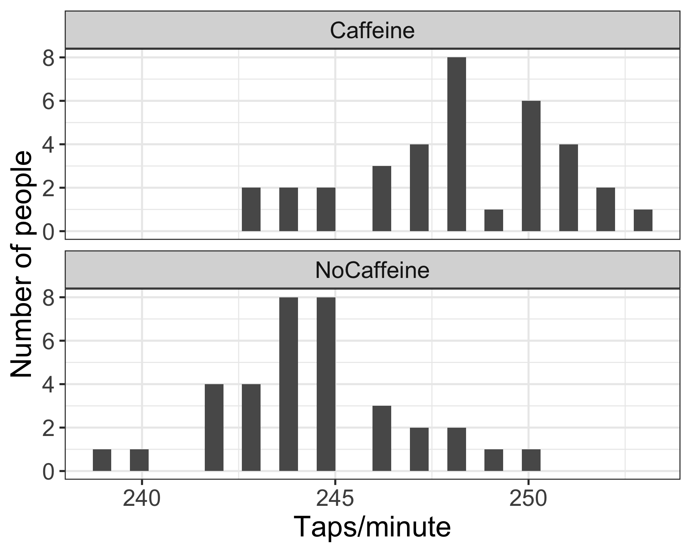
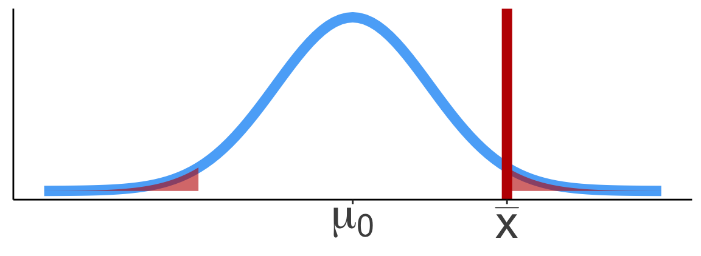
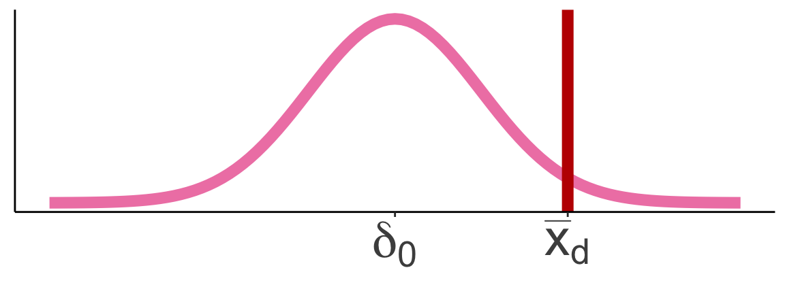
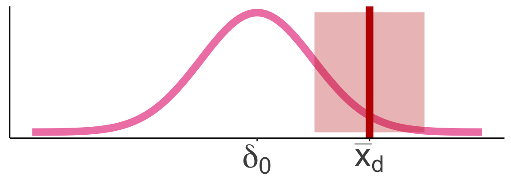
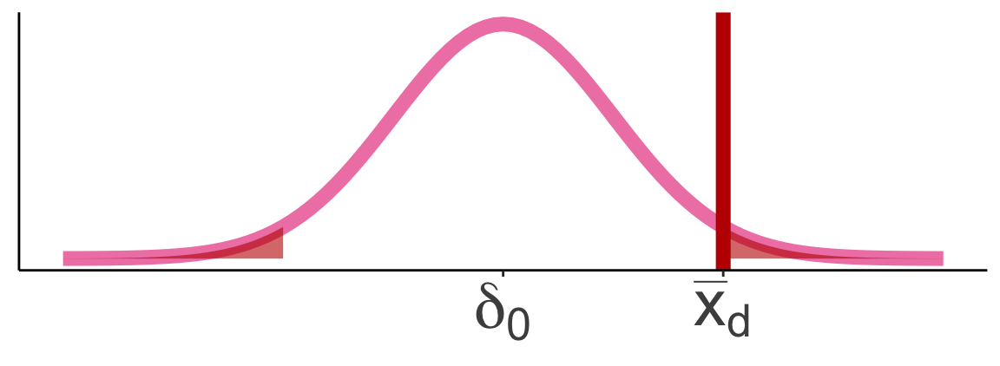
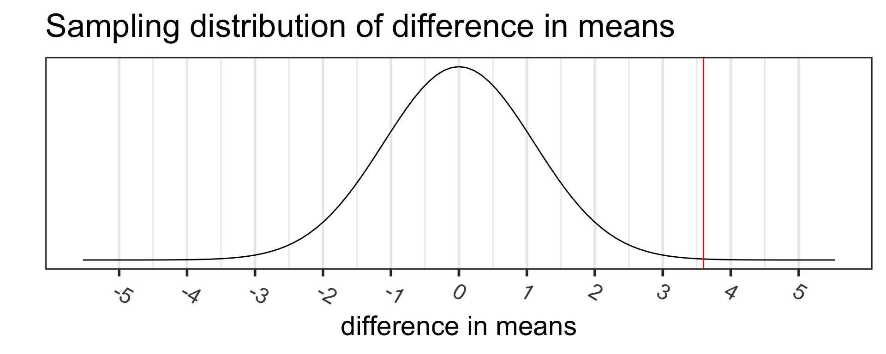
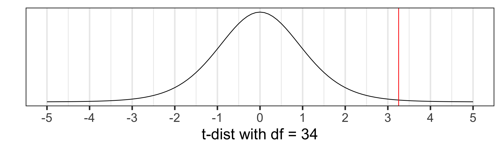

Lesson 13: Inference for difference in means from two independent samples
TB sections 5.3
Learning Objectives
- Define paired data and explain how it differs from independent samples in the context of statistical analysis.
- Construct confidence intervals for the mean difference in paired data and interpret these intervals in the context of the research question.
- Perform the appropriate hypothesis test for 2-sample independent data and interpret the results.
Where are we?

Different types of inference based on different data types
| Lesson | Section | Population parameter | Symbol (pop) | Point estimate | Symbol (sample) | SE |
|---|---|---|---|---|---|---|
| 11 | 5.1 | Pop mean | \(\mu\) | Sample mean | \(\overline{x}\) | \(\dfrac{s}{\sqrt{n}}\) |
| 12 | 5.2 | Pop mean of paired diff | \(\mu_d\) or \(\delta\) | Sample mean of paired diff | \(\overline{x}_{d}\) | \(\dfrac{s_d}{\sqrt{n}}\) |
| 13 | 5.3 | Diff in pop means | \(\mu_1-\mu_2\) | Diff in sample means | \(\overline{x}_1 - \overline{x}_2\) | ???? |
| 15 | 8.1 | Pop proportion | \(p\) | Sample prop | \(\widehat{p}\) | |
| 15 | 8.2 | Diff in pop prop’s | \(p_1-p_2\) | Diff in sample prop’s | \(\widehat{p}_1-\widehat{p}_2\) |
Learning Objective
What are data from two independent sample?
- Two independent samples: Individuals between and within samples are independent
- Typically: measure the same outcome for each sample, but typically the two samples differ based on a single variable
Examples
- Any study where participants are randomized to a control and treatment group
- Study where create two groups based on whether they were exposed or not to some condition (can be observational)
- Book: “Does treatment using embryonic stem cells (ESCs) help improve heart function following a heart attack?”
- Book: “Is there evidence that newborns from mothers who smoke have a different average birth weight than newborns from mothers who do not smoke?”
For two independent samples: Population parameters vs. sample statistics
Population parameter
- Population 1 mean: \(\mu_1\)
- Population 2 mean: \(\mu_2\)
- Mean difference: \(\mu_1 - \mu_2\)
- Population 1 standard deviation: \(\sigma_1\)
- Population 2 standard deviation: \(\sigma_2\)
Sample statistic (point estimate)
- Sample 1 mean: \(\overline{x}_1\)
- Sample 2 mean: \(\overline{x}_2\)
- Mean difference between samples: \(\overline{x}_1 - \overline{x}_2\)
- Sample 1 standard deviation: \(s_1\)
- Sample 2 standard deviation: \(s_2\)
Does caffeine increase finger taps/min (on average)?
- We will illustrate how to perform a hypothesis test for paired data as we work through this example
Study Design:1
- 70 college students students were trained to tap their fingers at a rapid rate
- Each then drank 2 cups of coffee (double-blind)
- Control group: decaf
- Caffeine group: ~ 200 mg caffeine
- After 2 hours, students were tested.
- Taps/minute recorded
Does caffeine increase finger taps/min (on average)?
- Load the data from the csv file
CaffeineTaps.csv - The code below is for when the data file is in a folder called
datathat is in your R project folder (your working directory)
CaffTaps <- read_csv(here::here("data", "CaffeineTaps_n35.csv"))Rows: 70 Columns: 2
── Column specification ────────────────────────────────────────────────────────
Delimiter: ","
chr (1): Group
dbl (1): Taps
ℹ Use `spec()` to retrieve the full column specification for this data.
ℹ Specify the column types or set `show_col_types = FALSE` to quiet this message.glimpse(CaffTaps)Rows: 70
Columns: 2
$ Taps <dbl> 246, 248, 250, 252, 248, 250, 246, 248, 245, 250, 242, 245, 244,…
$ Group <chr> "Caffeine", "Caffeine", "Caffeine", "Caffeine", "Caffeine", "Caf…EDA: Explore the finger taps data
Code to make these histograms
ggplot(CaffTaps, aes(x=Taps)) +
geom_histogram() +
facet_wrap(vars(Group), ncol=1) +
labs(y = "Number of people", x = "Taps/minute") +
theme(text = element_text(size = 30))`stat_bin()` using `bins = 30`. Pick better value with `binwidth`.
Summary statistics stratified by group
# get_summary_stats() from
# rstatix package
sumstats <- CaffTaps %>%
group_by(Group) %>%
get_summary_stats(type = "mean_sd")
sumstats %>% gt() %>%
tab_options(table.font.size = 40)| Group | variable | n | mean | sd |
|---|---|---|---|---|
| Caffeine | Taps | 35 | 248.114 | 2.621 |
| NoCaffeine | Taps | 35 | 244.514 | 2.318 |
Then calculate the difference between the means:
diff(sumstats$mean)[1] -3.6Same distribution: single-sample mean & paired mean difference (1/2)
Same distribution: single-sample mean & paired mean difference (2/2)
Single-sample mean:



Paired mean difference:



Approaches to answer a research question
- Research question is a generic form for 2 independent samples: Is there evidence to support that the population means are different from each other?
Calculate CI for the mean difference \(\delta\):
\[\overline{x}_d \pm t^*\cdot\frac{s_d}{\sqrt{n}}\]
- with \(t^*\) = t-score that aligns with specific confidence interval
Run a hypothesis test:

Hypotheses
\[\begin{align} H_0:& \delta = \delta_0 \\ H_A:& \delta \neq \delta_0 \\ (or&~ <, >) \end{align}\]
Test statistic
\[ t_{\overline{x}_d} = \frac{\overline{x}_d - \delta_0}{\frac{s_d}{\sqrt{n}}} \]
Learning Objectives
95% CI for the population mean difference in taps \(\mu_1 - \mu_2\)
Confidence interval for \(\mu_1 - \mu_2\)
\[\overline{x}_1 - \overline{x}_2 \pm\ t^*\times \text{SE}\]
- with \(\text{SE} = \sqrt{\frac{s_{1}^2}{n_{1}}+\frac{s_{2}^2}{n_2}}\) if population sd is not known
- \(t^*\) depends on the confidence level and degrees of freedom
- degrees of freedom (df) is: \(df=n-1\)
- \(n\) is minimum between \(n_1\) and \(n_2\)
95% CI for the mean difference in taps
CaffTaps %>% group_by(Group) %>% get_summary_stats(type = "mean_sd") %>%
gt() %>% tab_options(table.font.size = 40)| Group | variable | n | mean | sd |
|---|---|---|---|---|
| Caffeine | Taps | 35 | 248.114 | 2.621 |
| NoCaffeine | Taps | 35 | 244.514 | 2.318 |
95% CI for \(\mu_{caff} - \mu_{ctrl}\):
\[ \begin{aligned} \overline{x}_{\text{caff}} - \overline{x}_{\text{ctrl}} & \pm t^* \cdot \sqrt{\frac{s_{\text{caff}}^2}{n_{\text{caff}}}+\frac{s_{\text{ctrl}}^2}{n_{\text{ctrl}}}} \\ 248.114 - 244.514 & \pm 2.032 \cdot \sqrt{\frac{2.621^2}{35}+\frac{2.318^2}{35}} \\ 3.6 & \pm 2.032 \cdot \sqrt{0.196 + 0.154} \\ (2.398, & 4.802) \end{aligned} \]
Used \(t^*\) = qt(0.975, df=34) = 2.032
Conclusion:
We are 95% confident that the (population) difference in mean finger taps/min between the caffeine and control groups is between 2.398 mg/dL and 4.802 mg/dL.
95% CI for the mean difference in taps (using R)
t.test(formula = Taps ~ Group, data = CaffTaps)
Welch Two Sample t-test
data: Taps by Group
t = 6.0867, df = 67.002, p-value = 6.266e-08
alternative hypothesis: true difference in means between group Caffeine and group NoCaffeine is not equal to 0
95 percent confidence interval:
2.41945 4.78055
sample estimates:
mean in group Caffeine mean in group NoCaffeine
248.1143 244.5143 We can tidy the output
t.test(formula = Taps ~ Group, data = CaffTaps) %>% tidy() %>% gt() %>%
tab_options(table.font.size = 35) # use a different size in your HW| estimate | estimate1 | estimate2 | statistic | p.value | parameter | conf.low | conf.high | method | alternative |
|---|---|---|---|---|---|---|---|---|---|
| 3.6 | 248.1143 | 244.5143 | 6.086677 | 6.265631e-08 | 67.00222 | 2.41945 | 4.78055 | Welch Two Sample t-test | two.sided |
Conclusion:
We are 95% confident that the (population) mean difference in cholesterol levels after a vegetarian diet is between 2.398 mg/dL and 4.802 mg/dL.
Poll Everywhere Question 2
Learning Objectives
Reference: Steps in a Hypothesis Test
Check the assumptions
Set the level of significance \(\alpha\)
Specify the null ( \(H_0\) ) and alternative ( \(H_A\) ) hypotheses
- In symbols
- In words
- Alternative: one- or two-sided?
Calculate the test statistic.
Calculate the p-value based on the observed test statistic and its sampling distribution
Write a conclusion to the hypothesis test
- Do we reject or fail to reject \(H_0\)?
- Write a conclusion in the context of the problem
Step 1: Check the assumptions
The assumptions to run a hypothesis test on a sample are:
- Independent observations: Each observation from both samples is independent from all other observations
- Approximately normal sample or big n: the distribution of each sample should be approximately normal, or the sample size of each sample should be at least 30
- These are the criteria for the Central Limit Theorem in Lesson 09: Variability in estimates
In our example, we would check the assumptions with a statement:
- The observations are independent from each other. Each caffeine group (aka sample) has 35 individuals. Thus, we can use CLT to approximate the sampling distribution for each sample.
Step 2: Set the level of significance
Before doing a hypothesis test, we set a cut-off for how small the \(p\)-value should be in order to reject \(H_0\).
Typically choose \(\alpha = 0.05\)
- See Lesson 11: Hypothesis Testing 1: Single-sample mean
Step 3: Null & Alternative Hypotheses
- Question: Is there evidence to support that drinking caffeine increases the number of finger taps/min?
Null and alternative hypotheses in words
\(H_0\): The population difference in mean finger taps/min between the caffeine and control groups is 0
\(H_A\): The population difference in mean finger taps/min between the caffeine and control groups is greater than 0
Null and alternative hypotheses in symbols
\[\begin{align} H_0:& \mu_{caff} - \mu_{ctrl} = 0\\ H_A:& \mu_{caff} - \mu_{ctrl} > 0 \\ \end{align}\]
Step 4: Test statistic (part 1)
Recall that in general the test statistic has the form:
\[\text{test stat} = \frac{\text{point estimate}-\text{null value}}{SE}\] Thus, for a two sample independent means test, we have:
\[\text{test statistic} = \frac{\overline{x}_1 - \overline{x}_2 - 0}{SE_{\overline{x}_1 - \overline{x}_2}}\]
- What is the formula for \(SE_{\overline{x}_1 - \overline{x}_2}\)?
- What is the probability distribution of the test statistic?
- What assumptions need to be satisfied?
What distribution does \(\overline{X}_1 - \overline{X}_2\) have?
- Let \(\overline{X}_1\) and \(\overline{X}_2\) be the means of random samples from two independent groups, with parameters shown in table:
Some theoretical statistics:
- If \(\overline{X}_1\) and \(\overline{X}_2\) are independent normal RVs, then \(\overline{X}_1 - \overline{X}_2\) is also normal
- What is the mean of \(\overline{X}_1 - \overline{X}_2\)?
| Group 1 | Group 2 | |
|---|---|---|
| sample size | \(n_1\) | \(n_2\) |
| pop mean | \(\mu_1\) | \(\mu_2\) |
| pop sd | \(\sigma_1\) | \(\sigma_2\) |
\[E[\overline{X}_1 - \overline{X}_2] = E[\overline{X}_1] - E[\overline{X}_2] = \mu_1-\mu_2\]
- What is the standard deviation of \(\overline{X}_1 - \overline{X}_2\)?
\[\begin{align} Var(\overline{X}_1 - \overline{X}_2) &= Var(\overline{X}_1) + Var(\overline{X}_2) = \frac{\sigma_1^2}{n_1}+\frac{\sigma_2^2}{n_2} \\ SD(\overline{X}_1 - \overline{X}_2) &= \sqrt{\frac{\sigma_1^2}{n_1}+\frac{\sigma_2^2}{n_2}} \end{align}\]
Step 4: Test statistic (part 2)
\[ t_{\overline{x}_1 - \overline{x}_2} = \frac{\overline{x}_1 - \overline{x}_2 - 0}{\sqrt{\frac{s_1^2}{n_1} + \frac{s_2^2}{n_2}}} \]
- \(\overline{x}_1, \overline{x}_2\) are the sample means
- \(\mu_0=0\) is the mean value specified in \(H_0\)
- \(s_1, s_2\) are the sample SD’s
- \(n_1, n_2\) are the sample sizes
- Statistical theory tells us that \(t_{\overline{x}_1 - \overline{x}_2}\) follows a student’s t-distribution with
- \(df \approx\) smaller of \(n_1-1\) and \(n_2-1\)
- this is a conservative estimate (smaller than actual \(df\) )
Step 4: Test statistic (part 3)
| Group | variable | n | mean | sd |
|---|---|---|---|---|
| Caffeine | Taps | 35 | 248.114 | 2.621 |
| NoCaffeine | Taps | 35 | 244.514 | 2.318 |
\[ \text{test statistic} = t_{\overline{x}_1 - \overline{x}_2} = \frac{\overline{x}_1 - \overline{x}_2 - 0}{\sqrt{\frac{s_1^2}{n_1} + \frac{s_2^2}{n_2}}} = \frac{248.114 - 244.514 - 0}{\sqrt{\frac{2.621^2}{35}+\frac{2.318^2}{35}}} = 6.0869 \]
Based on the value of the test statistic, do you think we are going to reject or fail to reject \(H_0\)?
Step 5: p-value
The p-value is the probability of obtaining a test statistic just as extreme or more extreme than the observed test statistic assuming the null hypothesis \(H_0\) is true.


Calculate the p-value using the Student’s t-distribution with \(df = n-1 = 35-1=34\):
\[ \begin{aligned} \text{p-value} &=P(T > 3.25359)\\ &= 0.00497 \end{aligned} \]
pt(tstat,
df = min(n1 - 1, n2 - 1),
lower.tail = FALSE)[1] 0.004970063Step 6: Conclusion to hypothesis test
\[\begin{align} H_0:& \mu_{caff} - \mu_{ctrl} = 0\\ H_A:& \mu_{caff} - \mu_{ctrl} > 0\\ \end{align}\]
- Recall the \(p\)-value = 0.00497
- Use \(\alpha\) = 0.05.
- Do we reject or fail to reject \(H_0\)?
Conclusion statement:
- Stats class conclusion
- There is sufficient evidence that the (population) difference in mean finger taps/min with vs. without caffeine is greater than 0 ( \(p\)-value = 0.004).
- More realistic manuscript conclusion:
- The mean finger taps/min were 248.114 (SD = 2.621) and 244.514 (SD = 2.318) for the control and caffeine groups, and the increase of 3.6 taps/min was statistically discrenible ( \(p\)-value = 0.005).
Reference: Ways to run a 2-sample t-test in R
R: 2-sample t-test (with long data)
- The
CaffTapsdata are in a long format, meaning that- all of the outcome values are in one column and
- another column indicates which group the values are from
- This is a common format for data from multiple samples, especially if the sample sizes are different.
(Taps_2ttest <- t.test(formula = Taps ~ Group,
alternative = "greater",
data = CaffTaps))
Welch Two Sample t-test
data: Taps by Group
t = 6.0867, df = 67.002, p-value = 3.133e-08
alternative hypothesis: true difference in means between group Caffeine and group NoCaffeine is greater than 0
95 percent confidence interval:
2.613502 Inf
sample estimates:
mean in group Caffeine mean in group NoCaffeine
248.1143 244.5143 tidy the t.test output
# use tidy command from broom package for briefer output that's a tibble
tidy(Taps_2ttest) %>% gt() %>% tab_options(table.font.size = 40)| estimate | estimate1 | estimate2 | statistic | p.value | parameter | conf.low | conf.high | method | alternative |
|---|---|---|---|---|---|---|---|---|---|
| 3.6 | 248.1143 | 244.5143 | 6.086677 | 3.132816e-08 | 67.00222 | 2.613502 | Inf | Welch Two Sample t-test | greater |
- Pull the p-value:
tidy(Taps_2ttest)$p.value # we can pull specific values from the tidy output[1] 3.132816e-08R: 2-sample t-test (with wide data)
# make CaffTaps data wide: pivot_wider needs an ID column so that it
# knows how to "match" values from the Caffeine and NoCaffeine groups
CaffTaps_wide <- CaffTaps %>%
mutate(id = c(rep(1:10, 2), rep(11:35, 2))) %>% # "fake" IDs for pivot_wider step
pivot_wider(names_from = "Group",
values_from = "Taps")
glimpse(CaffTaps_wide)Rows: 35
Columns: 3
$ id <int> 1, 2, 3, 4, 5, 6, 7, 8, 9, 10, 11, 12, 13, 14, 15, 16, 17, …
$ Caffeine <dbl> 246, 248, 250, 252, 248, 250, 246, 248, 245, 250, 251, 251,…
$ NoCaffeine <dbl> 242, 245, 244, 248, 247, 248, 242, 244, 246, 242, 244, 245,…t.test(x = CaffTaps_wide$Caffeine, y = CaffTaps_wide$NoCaffeine, alternative = "greater") %>%
tidy() %>% gt() %>% tab_options(table.font.size = 40)| estimate | estimate1 | estimate2 | statistic | p.value | parameter | conf.low | conf.high | method | alternative |
|---|---|---|---|---|---|---|---|---|---|
| 3.6 | 248.1143 | 244.5143 | 6.086677 | 3.132816e-08 | 67.00222 | 2.613502 | Inf | Welch Two Sample t-test | greater |
Why are the df’s in the R output different?
From many slides ago:
- Statistical theory tells us that \(t_{\overline{x}_1 - \overline{x}_2}\) follows a student’s t-distribution with
- \(df \approx\) smaller of \(n_1-1\) and \(n_2-1\)
- this is a conservative estimate (smaller than actual \(df\) )
The actual degrees of freedom are calculated using Satterthwaite’s method:
\[\nu = \frac{[ (s_1^2/n_1) + (s_2^2/n_2) ]^2} {(s_1^2/n_1)^2/(n_1 - 1) + (s_2^2/n_2)^2/(n_2-1) } = \frac{ [ SE_1^2 + SE_2^2 ]^2}{ SE_1^4/df_1 + SE_2^4/df_2 }\]
Verify the p-value in the R output using \(\nu\) = 17.89012:
pt(3.3942, df = 17.89012, lower.tail = FALSE)[1] 0.001627588Pooled standard deviation estimate
- Sometimes we have reasons to believe that the population SD’s from the two groups are equal, such as when randomizing participants to two groups
- In this case we can use a pooled SD:
\[s_{pooled}^2 = \frac{s_1^2 (n_1-1) + s_2^2 (n_2-1)}{n_1 + n_2 - 2}\]
- \(n_1\), \(n_2\) are the sample sizes, and
- \(s_1\), \(s_2\) are the sample standard deviations
- of the two groups
- We use the pooled SD instead of \(s_1^2\) and \(s_2^2\) when calculating the standard error
\[SE = \sqrt{\frac{s_{pooled}^2}{n_1} + \frac{s_{pooled}^2}{n_2}}= s_{pooled}\sqrt{\frac{1}{n_1} + \frac{1}{n_2}}\]
Test statistic with pooled SD:
\[t_{\overline{x}_1 - \overline{x}_2} = \frac{\overline{x}_1 - \overline{x}_2 -0}{s_{pooled}\sqrt{\frac{1}{n_1} + \frac{1}{n_2}}}\]
CI with pooled SD:
\[(\overline{x}_1 - \overline{x}_2) \pm t^{\star} \cdot s_{pooled} \sqrt{\frac{1}{n_1} + \frac{1}{n_2}}\]
- The \(t\) distribution degrees of freedom are now:
\[df = (n_1 - 1) + (n_2 - 1) = n_1 + n_2 - 2.\]
R: 2-sample t-test with pooled SD
# t-test with pooled SD
t.test(formula = Taps ~ Group,
alternative = "greater",
var.equal = TRUE, # pooled SD
data = CaffTaps) %>%
tidy() %>%
gt() %>% tab_options(table.font.size = 40)| estimate | estimate1 | estimate2 | statistic | p.value | parameter | conf.low | conf.high | method | alternative |
|---|---|---|---|---|---|---|---|---|---|
| 3.6 | 248.1143 | 244.5143 | 6.086677 | 2.997785e-08 | 68 | 2.613705 | Inf | Two Sample t-test | greater |
# t-test without pooled SD
t.test(formula = Taps ~ Group,
alternative = "greater",
var.equal = FALSE, # default, NOT pooled SD
data = CaffTaps) %>%
tidy() %>%
gt() %>% tab_options(table.font.size = 40)| estimate | estimate1 | estimate2 | statistic | p.value | parameter | conf.low | conf.high | method | alternative |
|---|---|---|---|---|---|---|---|---|---|
| 3.6 | 248.1143 | 244.5143 | 6.086677 | 3.132816e-08 | 67.00222 | 2.613502 | Inf | Welch Two Sample t-test | greater |
Similar output in this case - why??
What’s next?
CI’s and hypothesis tests for different scenarios:
\[\text{point estimate} \pm z^*(or~t^*)\cdot SE,~~\text{test stat} = \frac{\text{point estimate}-\text{null value}}{SE}\]
| Day | Book | Population parameter |
Symbol | Point estimate | Symbol | SE |
|---|---|---|---|---|---|---|
| 10 | 5.1 | Pop mean | \(\mu\) | Sample mean | \(\overline{x}\) | \(\frac{s}{\sqrt{n}}\) |
| 10 | 5.2 | Pop mean of paired diff | \(\mu_d\) or \(\delta\) | Sample mean of paired diff | \(\overline{x}_{d}\) | \(\frac{s_d}{\sqrt{n}}\) |
| 11 | 5.3 | Diff in pop means |
\(\mu_1-\mu_2\) | Diff in sample means |
\(\overline{x}_1 - \overline{x}_2\) | \(\sqrt{\frac{s_1^2}{n_1} + \frac{s_2^2}{n_2}}\) or pooled |
| 12 | 8.1 | Pop proportion | \(p\) | Sample prop | \(\widehat{p}\) | ??? |
| 12 | 8.2 | Diff in pop proportions |
\(p_1-p_2\) | Diff in sample proportions |
\(\widehat{p}_1-\widehat{p}_2\) | ??? |
Footnotes
Based on following article with extra simulations by me: Hand, David J.; Daly, Fergus; McConway, K.; Lunn, D. and Ostrowski, E. (1993). A handbook of small data sets. London, U.K.: Chapman and Hall.↩︎